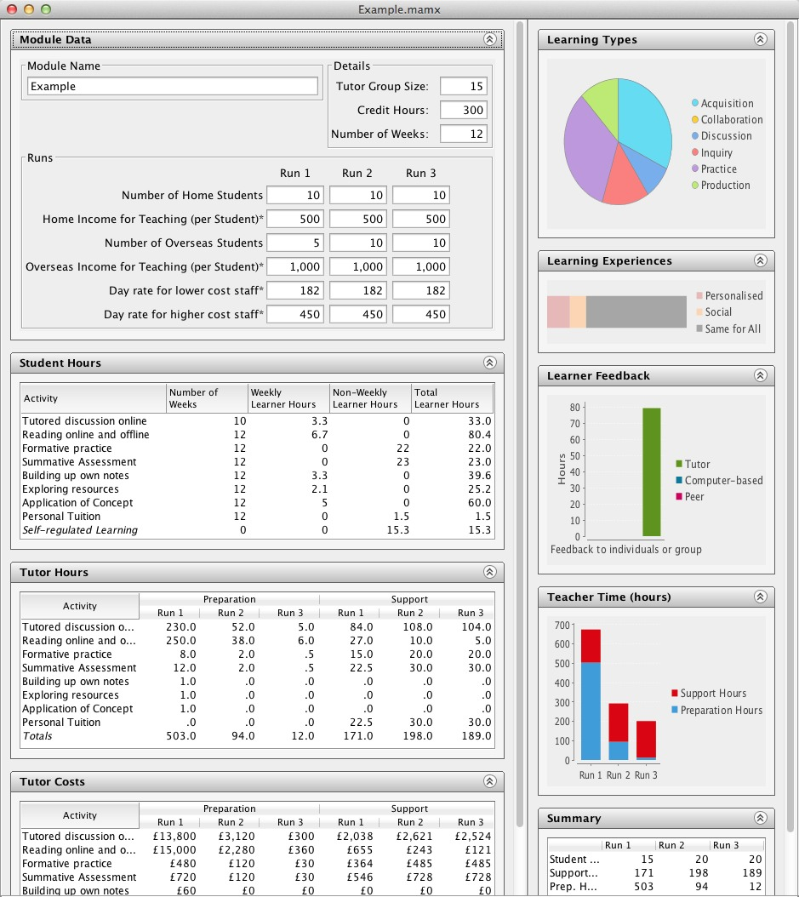

The Course Resource Appraisal Model is a digital design tool that helps academics developing a module to construct a plan for improved learning benefits, and controlled teaching costs. The intended end users are programme/module leaders who are interested especially in costing the move from traditional to blended or online courses. The tool focuses on the costs linked to staff and student time, and the benefits linked to the types of learning and teaching. One of its principal advantages is that it enables innovators to plan and understand the relationship between the expected learning benefits and the likely teaching costs. Phase 1 of the project sets out to develop this tool as a stand-alone online product for use in all IOE departments.
A prototype version of the tool (known as the CRAM Tool) is now available for user evaluation purposes. To download the CRAM Tool, select the version appropriate for your platform below. You require the current version of Java to be installed on your system. The current version of the CRAM tool does not include any functionality to undo user edits or to successfully cancel changes made in dialogue boxes. We have provided an example module if you don’t want to start from scratch.
To report an issue or suggest an enhancement, use the issues list.
(Build @revision@ on @date@)